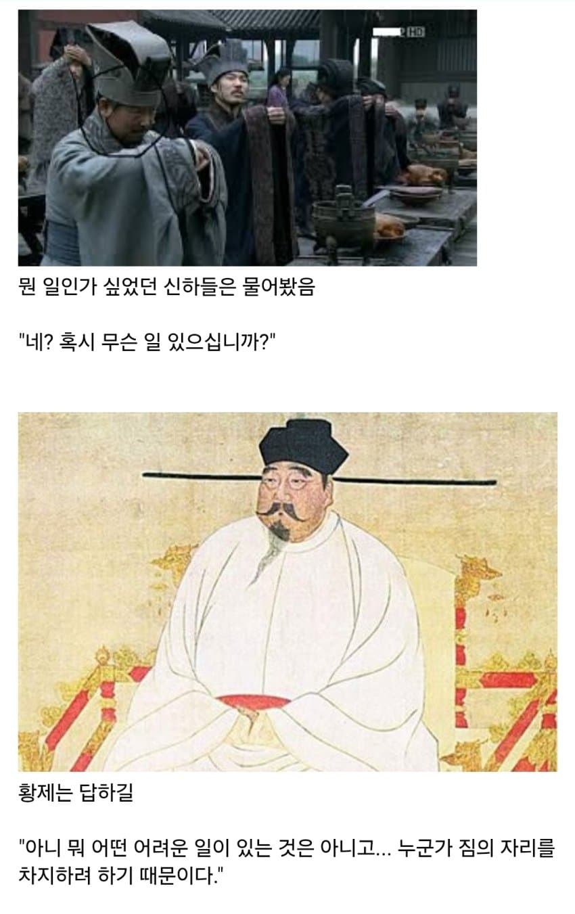
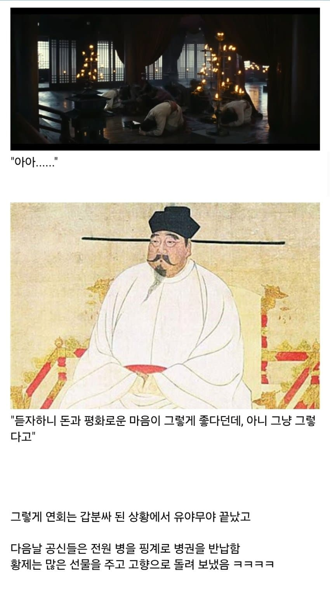

송나라를 세우고 제위에 오른 황제 태조 조광윤이 이균과 이중진의 반란을 진압한 이후 일어난 일이다.





송 태조 조광윤이 군권을 쥔 부랄 공신들을 차마 숙청하기는 뭣해 고민하다가 내놓은 해결책이었는데
군주가 "솔직히 난 니들 반란 일으킬까봐 겁난다." 라고 허심탄회하게 말하며 군권을 달라 요구하고
신하들도 황제에게 그대로 군권을 내놓은, 중국사에서 그 예를 찾아보기 어려운 평화로운 정치쇼였다.
조광윤도 이런 군인 공신들에게 재산과 영지와 관직을 대대손손 퍼주면서 은혜를 갚아줬고
남송 멸망까지 사대부들은 황실에 충성하며 목숨까지 바치게 된다.
뭐 신하들도 좀 꼬롬한 상황이긴 하지
얘가 왕 하기 좋겠다며 싫다는 사람 강제로 왕 만들어놨는데
군권을 계속 가지고 있는다? 왕위를 노리겠다란 소리 100% 들을 거 뻔하니
반납할 수 밖에 없을 듯